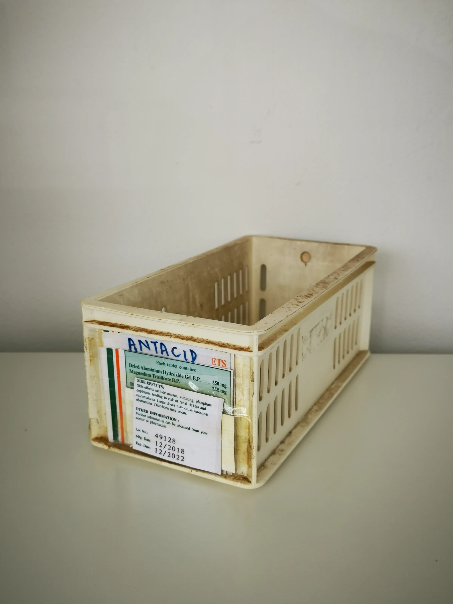

This guide provides a comprehensive checklist for professional buyers to prepare for their first aesthetic wholesale order, ensuring a smooth procurement process.
Key Takeaways
- Conduct thorough research on aesthetic products and suppliers to make informed decisions.
- Evaluate suppliers based on product quality, communication, and reliability to ensure a successful partnership.
- Plan your order quantities meticulously, taking into account minimum order quantities (MOQ) and your business needs.
- Clarify all documentation and shipping requirements before finalizing your order to avoid delays.
- Establish a reorder plan to maintain optimal inventory levels and prevent stockouts.
What this guide covers
- Understanding aesthetic products
- Identifying relevant buyers
- Comparison criteria for suppliers
- Checklist for requesting quotes
- Logistics considerations
- MOQ and reorder planning
- Frequently asked questions
What buyers should understand first

Aesthetic products encompass a wide range of items used in beauty and wellness treatments, including injectables, skincare products, and devices. These products are essential for clinics, spas, and resellers looking to provide high-quality services to their clients. Understanding the characteristics of these products, such as their formulations, packaging, and intended use, is crucial for making informed purchasing decisions.
As a buyer, it is important to recognize that the aesthetic market is highly regulated, and compliance with local laws and regulations is necessary. This guide aims to equip you with the knowledge and tools needed to navigate the wholesale purchasing process effectively, ensuring that you select the right products from reputable suppliers. By following this guide, you can avoid common pitfalls and make confident purchasing decisions that align with your business goals.
Which buyers is this most relevant for?
This guide is particularly relevant for professional buyers in various business scenarios, including:
- Clinics: Looking to stock aesthetic injectables and skincare products for their services, clinics need to ensure they are sourcing from reliable suppliers to maintain client trust.
- Spas: Aiming to enhance their treatment offerings with high-quality aesthetic products, spas must consider product efficacy and client satisfaction in their procurement process.
- Resellers: Seeking to expand their product lines with popular aesthetic brands, resellers should focus on market trends and customer preferences to make informed choices.
- Distributors: Focused on sourcing reliable products for their retail partners, distributors need to ensure they have a diverse inventory that meets the needs of various clients.
Each of these buyer types has unique order planning needs, from understanding product demand to managing inventory levels. By following this guide, you can streamline your procurement process and make confident purchasing decisions that support your business's growth and success.
How to compare options before ordering
When preparing to place your first aesthetic wholesale order, it is essential to compare different options to ensure you choose the best supplier for your needs. Here are some practical criteria to consider:
- Product Type: Identify the specific aesthetic products you need and ensure the supplier offers a comprehensive range that aligns with your business model.
- Brand Reputation: Research the brands you are considering. Look for established names with positive reviews and a history of quality to ensure reliability.
- Packaging: Evaluate the packaging of the products. Ensure that it meets your standards for safety and presentation, as this can impact your brand image.
- Batch/Expiry Visibility: Confirm that the supplier provides clear information regarding batch numbers and expiry dates, which is crucial for compliance and customer safety.
- Supplier Communication: Assess the responsiveness and clarity of communication from potential suppliers. Good communication can prevent misunderstandings and ensure a smooth ordering process.
- Destination Requirements: Understand any specific shipping requirements or restrictions for your location, including customs regulations that may apply.
Buyer checklist before requesting a quote

Before reaching out to suppliers for a quote, ensure you have the following information ready:
- Product List: Compile a detailed list of the aesthetic products you wish to order, including specifications and any preferred brands.
- Quantities: Determine the quantities for each product, considering your business needs and minimum order quantities (MOQ) to avoid overstocking or stockouts.
- Shipping Details: Provide accurate shipping information, including delivery address and any special instructions to ensure timely delivery.
- Documentation: Ensure you have all necessary documentation ready, including business licenses and any required certifications for the products you are ordering.
- Budget: Establish a budget for your order to help guide your purchasing decisions and ensure you remain within financial limits.
Shipping, packing and documentation questions
Logistics play a crucial role in the procurement process. Here are some common questions regarding shipping, packing, and documentation:
- What are the estimated shipping costs for my order, and how can I optimize these costs?
- How will the products be packed to ensure they arrive safely and in good condition?
- What documentation will I need to provide for customs clearance, and are there any specific forms required?
- Are there specific shipping carriers recommended for aesthetic products to ensure reliability and safety?
- How can I track my order once it has been shipped to stay informed about its status?
MOQ, quotation and reorder planning
Understanding minimum order quantities (MOQ) is vital for effective procurement. Different suppliers may have varying MOQs, which can impact your purchasing strategy. Here’s how to prepare:
- Determine Order Quantities: Assess your anticipated sales volume to decide how much inventory you need, factoring in seasonal demand fluctuations.
- Variants: Consider the different product variants you may want to order, such as sizes or formulations, to cater to diverse customer preferences.
- Destination Details: Ensure you provide accurate shipping information to avoid delays and complications during transit.
- Reorder Planning: Establish a plan for reordering based on sales trends and inventory turnover to maintain optimal stock levels.
Contact SOLA to help confirm current availability and wholesale quotation.
FAQ
What is the minimum order quantity (MOQ) for aesthetic products?
The MOQ varies by supplier and product type. It’s essential to confirm this information before placing an order to ensure it aligns with your business needs.
How do I ensure product quality when ordering wholesale?
Research suppliers thoroughly, request samples if possible, and check for certifications or quality assurances to verify product integrity.
What documentation do I need for shipping aesthetic products?
You may need business licenses, import/export permits, and any specific certifications required for the products you are ordering.
How can I track my wholesale order?
Most suppliers provide tracking information once your order has been shipped. Ensure to ask for this when placing your order to stay updated on its status.
Can I negotiate prices with wholesale suppliers?
Yes, many suppliers are open to negotiation, especially for larger orders. It’s worth discussing pricing during the quotation process to secure the best deal.
Planning a wholesale request?
Send product names, quantities and destination for a tailored discussion.
Contact SOLA on WhatsApp →General educational content for professional buyers. Not medical, legal, regulatory or import advice.
Image sources: Procurement officer at Tawfiq Hospital, Malindi taking stock of the medical supplies (14616376493).jpg by President's Malaria Initiative (Public domain, 2592x1936 px); Medicine storage container 10.jpg by Wikimedia Commons contributor (CC0, 2736x3648 px); Balikatan 25- U S , Philippine forces construct multi-purpose warehouse, prepare medical supplies to local community (8962078).jpg by Lance Cpl. Roger Annoh (Public domain, 8192x5464 px).